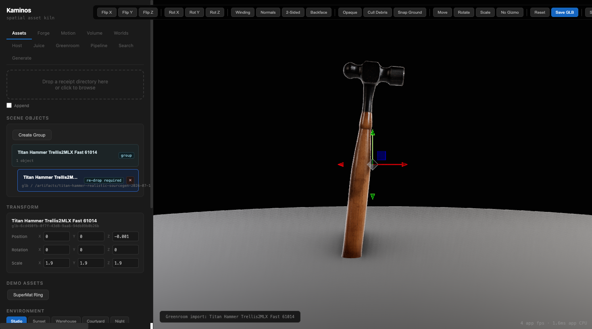
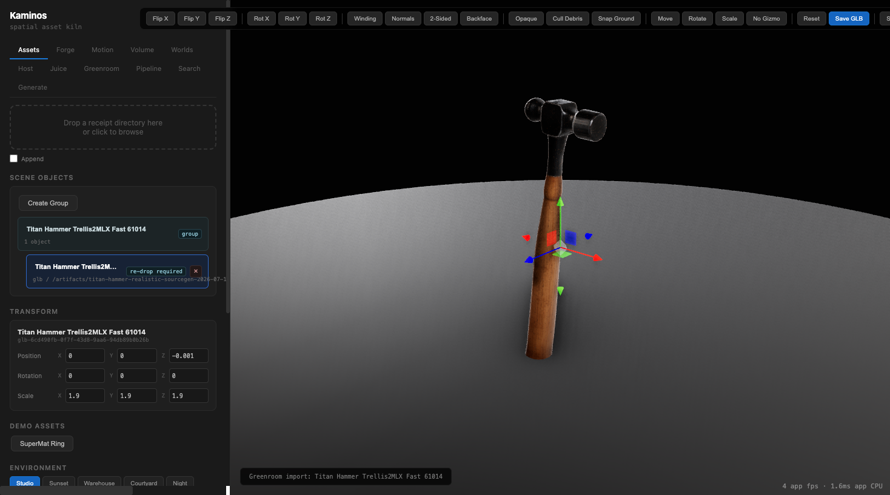

<!doctype html>
<meta charset="utf-8">
<title>Titan Hammer Trellis Comparison</title>
<style>
  body { margin: 0; background: #111; color: #eee; font: 14px/1.4 system-ui, sans-serif; }
  main { max-width: 1280px; margin: 0 auto; padding: 24px; }
  h1 { font-size: 22px; margin: 0 0 16px; }
  .grid { display: grid; grid-template-columns: repeat(auto-fit, minmax(260px, 1fr)); gap: 16px; }
  figure { margin: 0; background: #1b1b1b; border: 1px solid #333; border-radius: 6px; overflow: hidden; }
  img { display: block; width: 100%; height: auto; background: #777; }
  figcaption { padding: 10px 12px; color: #ddd; }
  small { display: block; color: #aaa; margin-top: 4px; }
</style>
<main>
  <h1>Titan Hammer Trellis Comparison</h1>
  <section class="grid">
    <figure>
      
      <figcaption>Flux2 seed 61013 source<small>Previous SF3D source-realism baseline.</small></figcaption>
    </figure>
    <figure>
      
      <figcaption>Flux2 seed 61014 source<small>Operator-preferred Trellis source.</small></figcaption>
    </figure>
    <figure>
      
      <figcaption>SF3D 61013 front<small>Previous promoted GLB baseline.</small></figcaption>
    </figure>
    <figure>
      
      <figcaption>Trellis2MLX 61014 front<small>Current promoted visual/orbitability candidate.</small></figcaption>
    </figure>
    <figure>
      
      <figcaption>SF3D 61013 oblique<small>Texture and head volume baseline.</small></figcaption>
    </figure>
    <figure>
      
      <figcaption>Trellis2MLX 61014 oblique<small>Better head volume and angled-handle read.</small></figcaption>
    </figure>
  </section>
</main>
